O 위치제약 보류: 실제 사진 대조실험
세 사례는 새19 점수를 보기 전에 기존 O-hard-guard 진단에서 고정했습니다. 모든 사례에서 동일한 e → 18c native-only → 19 native-only를 비교하며, 사진별 최적 방법을 섞지 않았습니다. 대표성·성공을 보장하는 표본은 아닙니다.
O는 계속 O입니다. raw 예측 중심의 경험 원 제약만 보류하고 원래의 닫힌 캔버스를 유지했습니다. 원은 실제 가림 물체 외곽이 아니며 새 박스도 독립적인 물리 관측이 아닙니다. B/I·NMS·U·부분관측·잡음·모델과 연속 최적화 정책은 같습니다. 실제 feasible 후보와 선택 시작점은 달라질 수 있습니다.
wire는 저장 모델투영이고 사진 위 측정점이 아닙니다. S는 모델투영만, U는 범위만 사용합니다. GT/참조 wire·새 선 fitting·NN 호출은 없습니다. 추가143 오차는 저장 annotation/PnP에서 유도한 명목 참조 기준으로 독립 계측이 아닙니다. 반복 진단한 탐색 자료의 인과 대조실험이며 새 기본 방법이나 전체 목표 완료를 선언하지 않습니다.
| 집합 | 고정 방법 | T≤5cm | 5cm·5° | 평균 cm | 최대 cm | fallback |
|---|
| 기존 TEST49 | 기존 e | 49 | 49 | 1.299 | 4.339 | 0 |
| 기존 TEST49 | 18c 연속·native (기존 O 원) | 42 | 41 | 3.333 | 40.358 | 0 |
| 기존 TEST49 | 19 연속·native (O 위치제약 보류) | 40 | 39 | 5.392 | 52.843 | 0 |
| 추가143 | 기존 e | 66 | 65 | 18.502 | 260.412 | 4 |
| 추가143 | 18c 연속·native (기존 O 원) | 68 | 68 | 16.609 | 182.500 | 0 |
| 추가143 | 19 연속·native (O 위치제약 보류) | 68 | 67 | 20.933 | 576.884 | 0 |
| 별도 CAL46 | 기존 e | 38 | 37 | 5.379 | 51.978 | 1 |
| 별도 CAL46 | 18c 연속·native (기존 O 원) | 36 | 35 | 5.901 | 62.704 | 0 |
| 별도 CAL46 | 19 연속·native (O 위치제약 보류) | 36 | 35 | 8.936 | 166.244 | 0 |
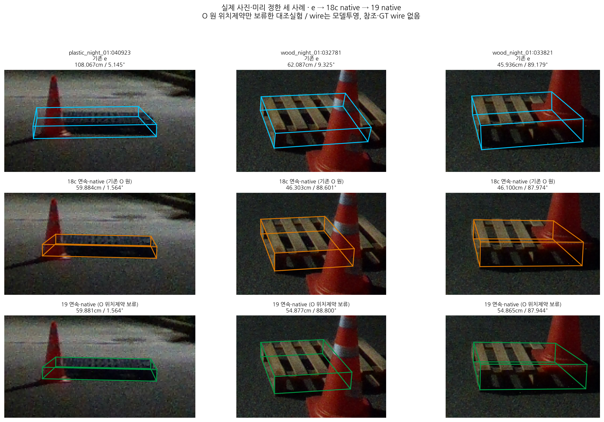
모든 표시 값·출처 JSON · 18c 기존 과정 · 첫49 e 과정
plastic_night_01:040923
고정 상태: O B B O O B S S
| 고정 방법 | 명목 참조 오차 | W/D family | 상태 | 옛 O 원 밖 투영 수 |
|---|
| 기존 e | 108.067cm / 5.145° | SWAPPED_WD | joint 수용 | 2 |
| 18c 연속·native (기존 O 원) | 59.884cm / 1.564° | SWAPPED_WD | joint 수용 | 0 |
| 19 연속·native (O 위치제약 보류) | 59.881cm / 1.564° | SWAPPED_WD | joint 수용 | 0 |
옛 원 밖 개수는 저장 모델투영의 기하 진단이며 실제 KP 위치나 참조 검사가 아닙니다.
원본 RGB① 초기 모델·고정 B/I 기록
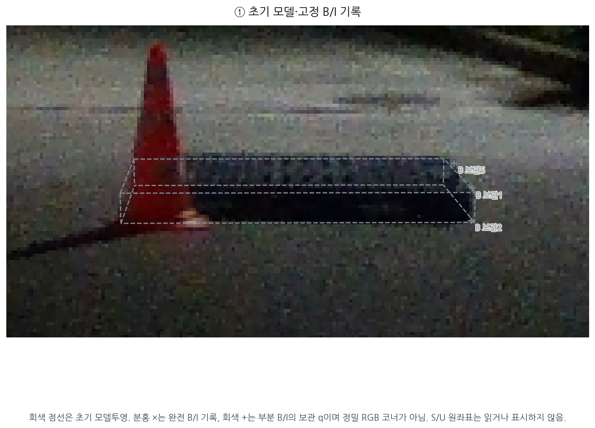
회색 점선은 초기 모델투영. 분홍 ×는 완전 B/I 기록, 회색 +는 부분 B/I의 보관 q이며 정밀 RGB 코너가 아님. S/U 원좌표는 읽거나 표시하지 않음.
② 동일 실제 마스크·NMS 선 대안
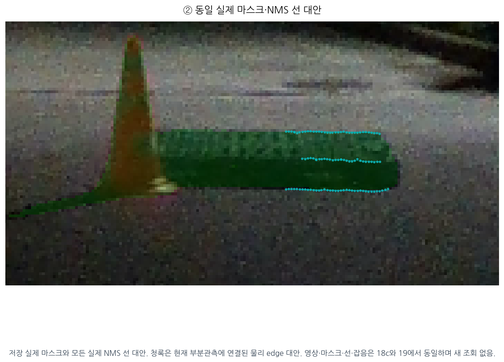
저장 실제 마스크와 모든 실제 NMS 선 대안. 청록은 현재 부분관측에 연결된 물리 edge 대안. 영상·마스크·선·잡음은 18c와 19에서 동일하며 새 조회 없음.
③ 기존 O 원 + U·부분관측 범위
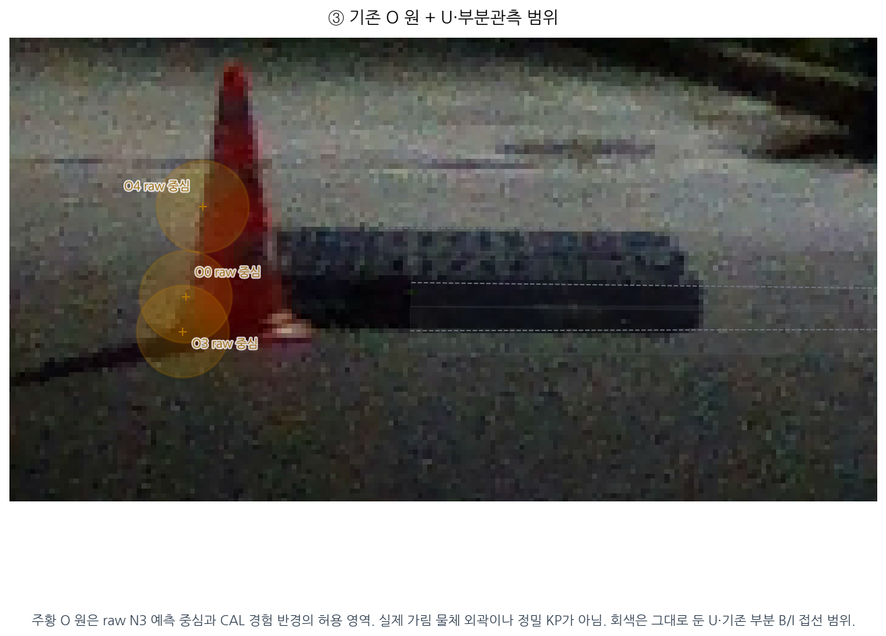
주황 O 원은 raw N3 예측 중심과 CAL 경험 반경의 허용 영역. 실제 가림 물체 외곽이나 정밀 KP가 아님. 회색은 그대로 둔 U·기존 부분 B/I 접선 범위.
④ O 위치제약 보류: 기존 전체 캔버스
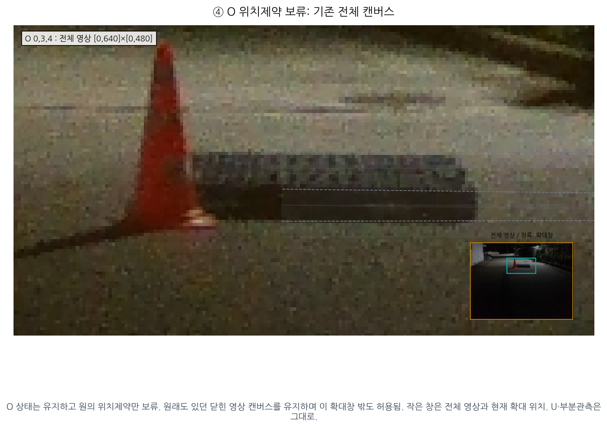
O 상태는 유지하고 원의 위치제약만 보류. 원래도 있던 닫힌 영상 캔버스를 유지하며 이 확대창 밖도 허용됨. 작은 창은 전체 영상과 현재 확대 위치. U·부분관측은 그대로.
⑤ 기존 e 저장 자세
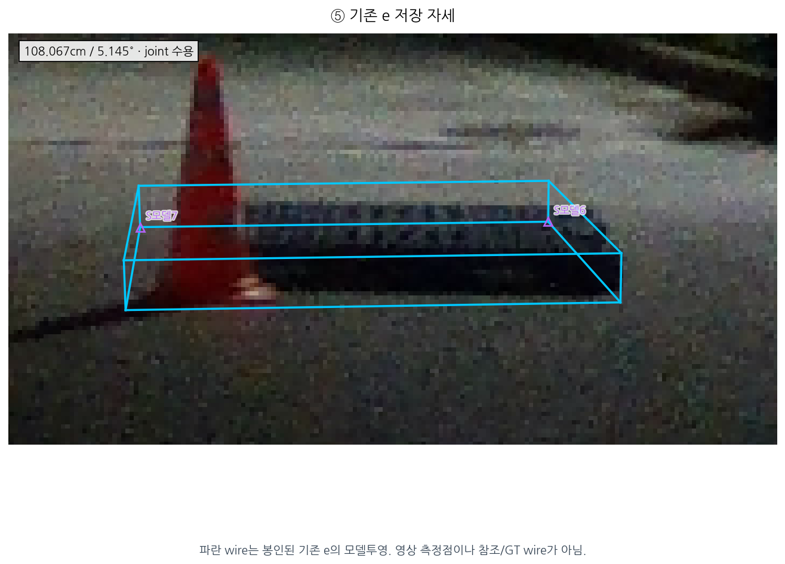
파란 wire는 봉인된 기존 e의 모델투영. 영상 측정점이나 참조/GT wire가 아님.
⑥ 18c native 저장 자세
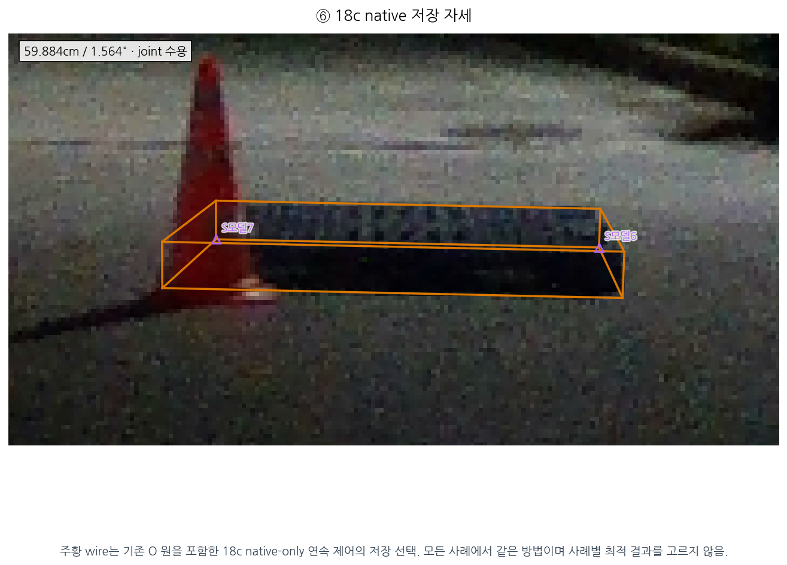
주황 wire는 기존 O 원을 포함한 18c native-only 연속 제어의 저장 선택. 모든 사례에서 같은 방법이며 사례별 최적 결과를 고르지 않음.
⑦ 19 native 저장 자세
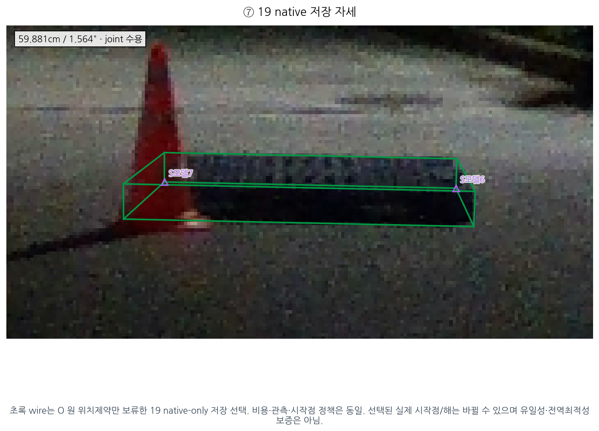
초록 wire는 O 원 위치제약만 보류한 19 native-only 저장 선택. 비용·관측·시작점 정책은 동일. 선택된 실제 시작점/해는 바뀔 수 있으며 유일성·전역최적성 보증은 아님.
wood_night_01:032781
고정 상태: I O O B B U S B
| 고정 방법 | 명목 참조 오차 | W/D family | 상태 | 옛 O 원 밖 투영 수 |
|---|
| 기존 e | 62.087cm / 9.325° | SWAPPED_WD | joint 수용 | 0 |
| 18c 연속·native (기존 O 원) | 46.303cm / 88.601° | ORIGINAL_WD | joint 수용 | 0 |
| 19 연속·native (O 위치제약 보류) | 54.877cm / 88.800° | ORIGINAL_WD | joint 수용 | 1 |
옛 원 밖 개수는 저장 모델투영의 기하 진단이며 실제 KP 위치나 참조 검사가 아닙니다.
원본 RGB① 초기 모델·고정 B/I 기록
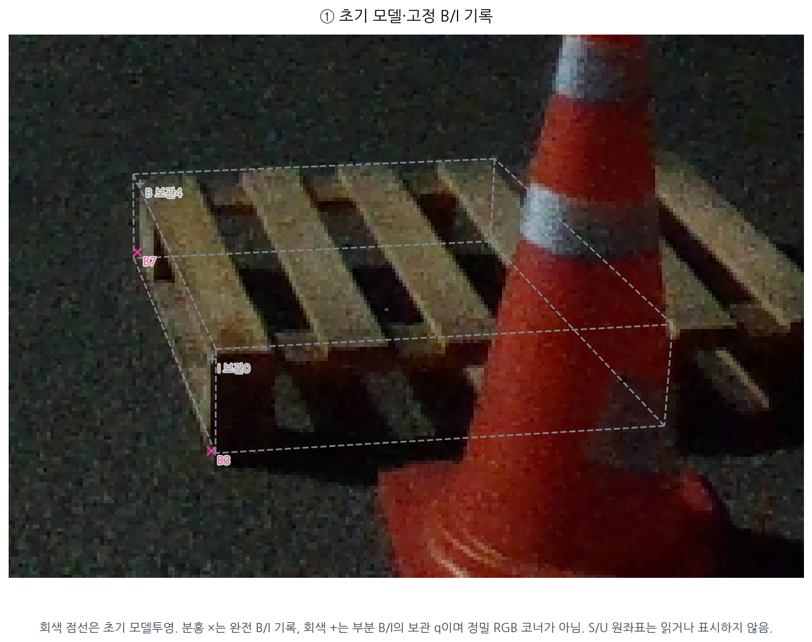
회색 점선은 초기 모델투영. 분홍 ×는 완전 B/I 기록, 회색 +는 부분 B/I의 보관 q이며 정밀 RGB 코너가 아님. S/U 원좌표는 읽거나 표시하지 않음.
② 동일 실제 마스크·NMS 선 대안
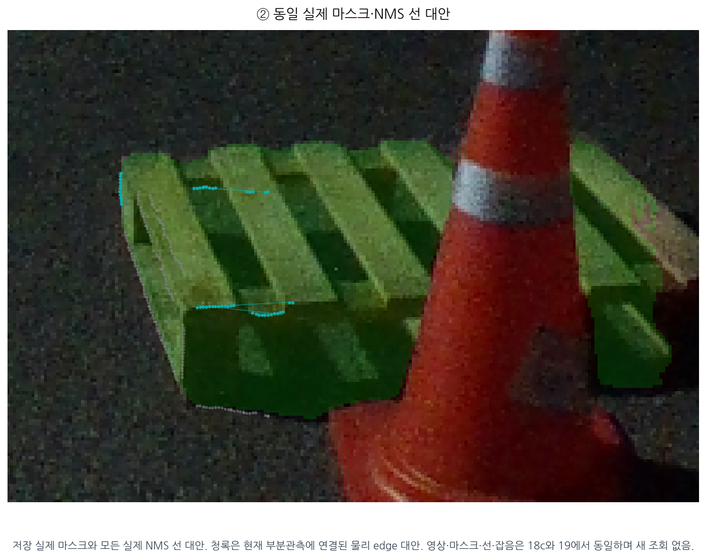
저장 실제 마스크와 모든 실제 NMS 선 대안. 청록은 현재 부분관측에 연결된 물리 edge 대안. 영상·마스크·선·잡음은 18c와 19에서 동일하며 새 조회 없음.
③ 기존 O 원 + U·부분관측 범위
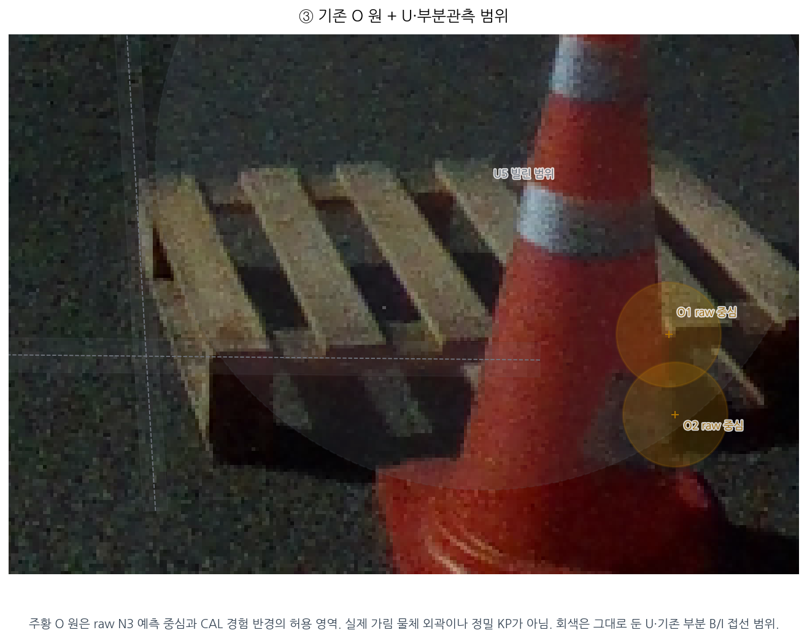
주황 O 원은 raw N3 예측 중심과 CAL 경험 반경의 허용 영역. 실제 가림 물체 외곽이나 정밀 KP가 아님. 회색은 그대로 둔 U·기존 부분 B/I 접선 범위.
④ O 위치제약 보류: 기존 전체 캔버스
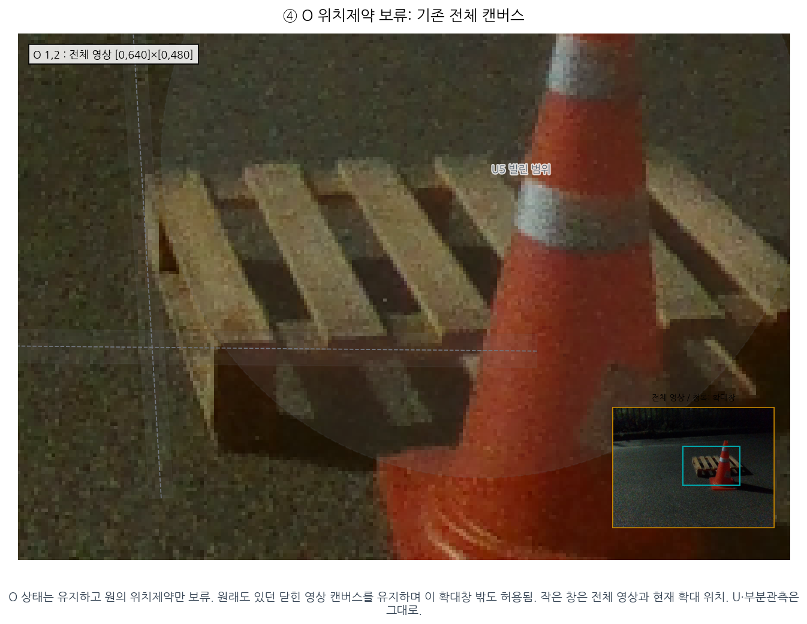
O 상태는 유지하고 원의 위치제약만 보류. 원래도 있던 닫힌 영상 캔버스를 유지하며 이 확대창 밖도 허용됨. 작은 창은 전체 영상과 현재 확대 위치. U·부분관측은 그대로.
⑤ 기존 e 저장 자세
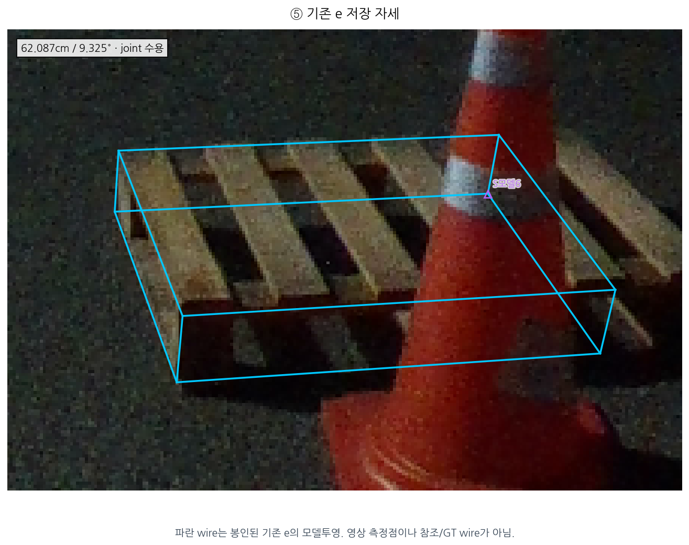
파란 wire는 봉인된 기존 e의 모델투영. 영상 측정점이나 참조/GT wire가 아님.
⑥ 18c native 저장 자세
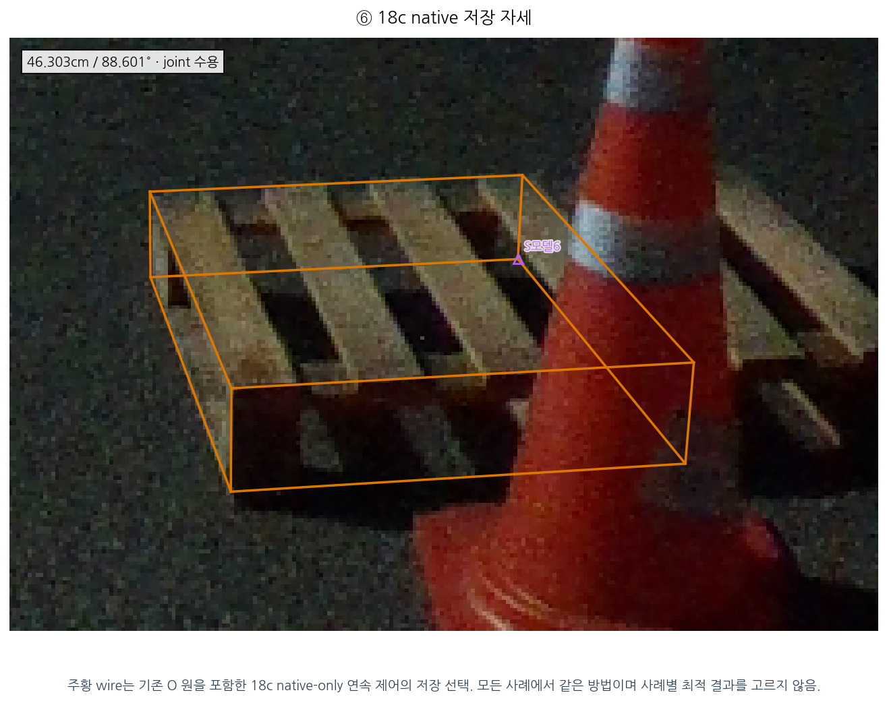
주황 wire는 기존 O 원을 포함한 18c native-only 연속 제어의 저장 선택. 모든 사례에서 같은 방법이며 사례별 최적 결과를 고르지 않음.
⑦ 19 native 저장 자세
초록 wire는 O 원 위치제약만 보류한 19 native-only 저장 선택. 비용·관측·시작점 정책은 동일. 선택된 실제 시작점/해는 바뀔 수 있으며 유일성·전역최적성 보증은 아님.
wood_night_01:033821
고정 상태: I O O B B O S B
| 고정 방법 | 명목 참조 오차 | W/D family | 상태 | 옛 O 원 밖 투영 수 |
|---|
| 기존 e | 45.936cm / 89.179° | ORIGINAL_WD | joint 수용 | 0 |
| 18c 연속·native (기존 O 원) | 46.100cm / 87.974° | ORIGINAL_WD | joint 수용 | 0 |
| 19 연속·native (O 위치제약 보류) | 54.865cm / 87.944° | ORIGINAL_WD | joint 수용 | 3 |
옛 원 밖 개수는 저장 모델투영의 기하 진단이며 실제 KP 위치나 참조 검사가 아닙니다.
원본 RGB① 초기 모델·고정 B/I 기록
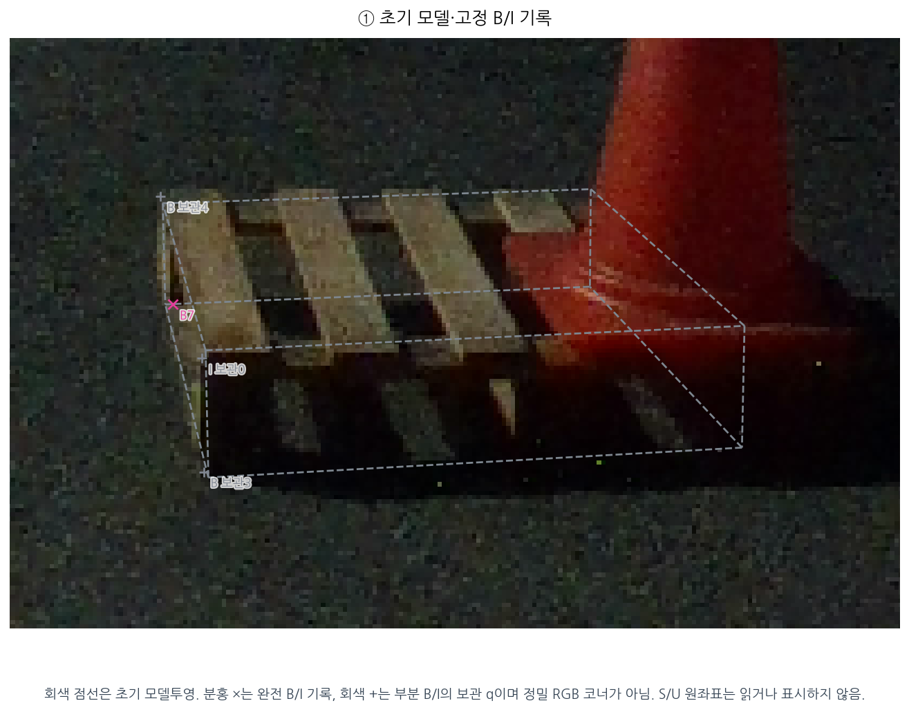
회색 점선은 초기 모델투영. 분홍 ×는 완전 B/I 기록, 회색 +는 부분 B/I의 보관 q이며 정밀 RGB 코너가 아님. S/U 원좌표는 읽거나 표시하지 않음.
② 동일 실제 마스크·NMS 선 대안
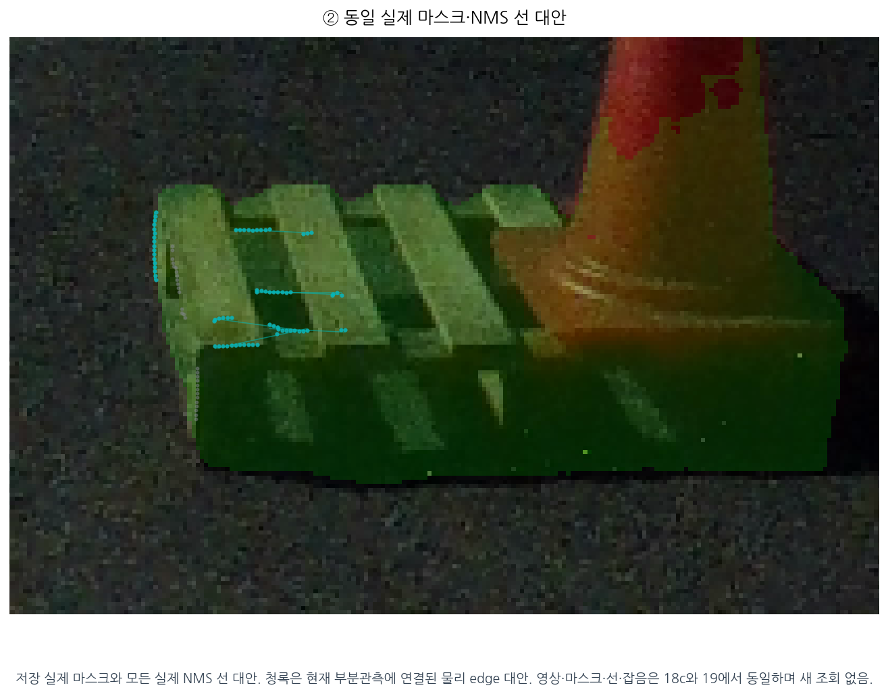
저장 실제 마스크와 모든 실제 NMS 선 대안. 청록은 현재 부분관측에 연결된 물리 edge 대안. 영상·마스크·선·잡음은 18c와 19에서 동일하며 새 조회 없음.
③ 기존 O 원 + U·부분관측 범위
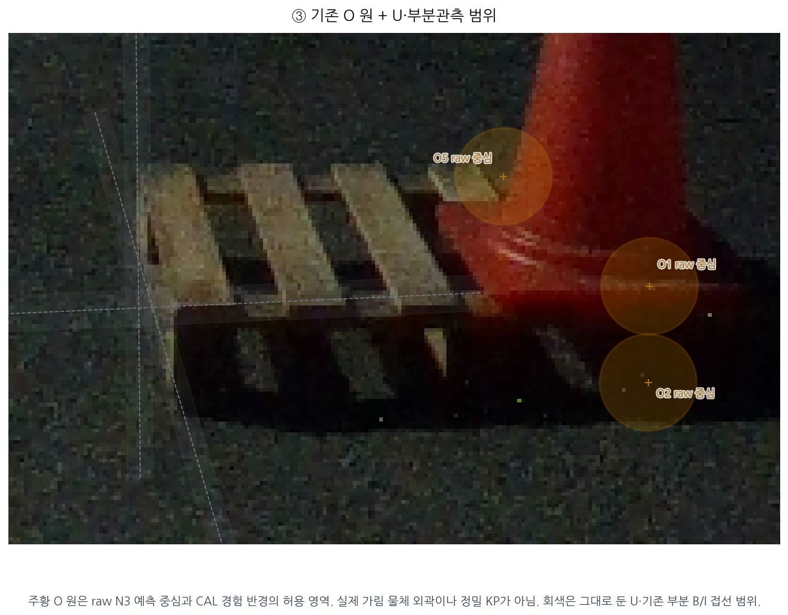
주황 O 원은 raw N3 예측 중심과 CAL 경험 반경의 허용 영역. 실제 가림 물체 외곽이나 정밀 KP가 아님. 회색은 그대로 둔 U·기존 부분 B/I 접선 범위.
④ O 위치제약 보류: 기존 전체 캔버스
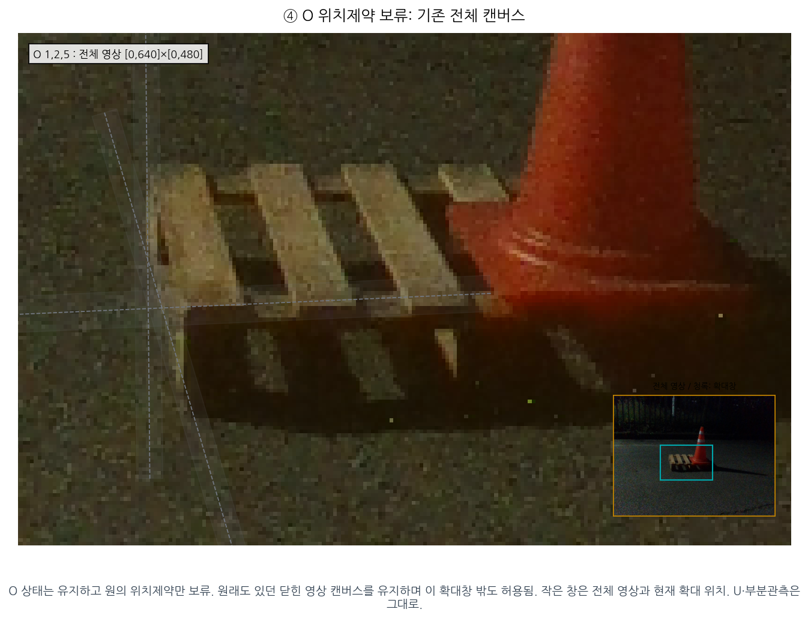
O 상태는 유지하고 원의 위치제약만 보류. 원래도 있던 닫힌 영상 캔버스를 유지하며 이 확대창 밖도 허용됨. 작은 창은 전체 영상과 현재 확대 위치. U·부분관측은 그대로.
⑤ 기존 e 저장 자세
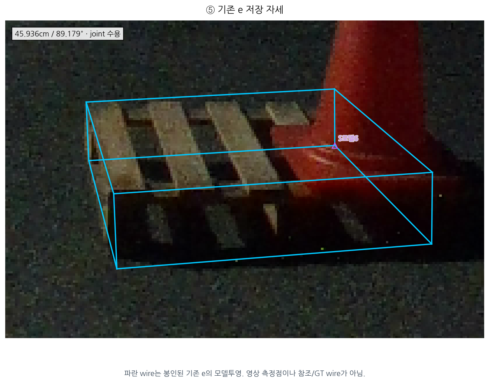
파란 wire는 봉인된 기존 e의 모델투영. 영상 측정점이나 참조/GT wire가 아님.
⑥ 18c native 저장 자세
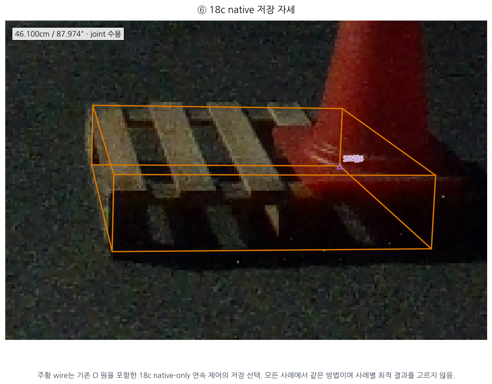
주황 wire는 기존 O 원을 포함한 18c native-only 연속 제어의 저장 선택. 모든 사례에서 같은 방법이며 사례별 최적 결과를 고르지 않음.
⑦ 19 native 저장 자세
초록 wire는 O 원 위치제약만 보류한 19 native-only 저장 선택. 비용·관측·시작점 정책은 동일. 선택된 실제 시작점/해는 바뀔 수 있으며 유일성·전역최적성 보증은 아님.